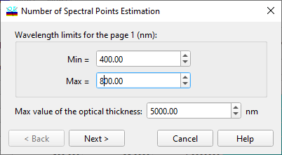
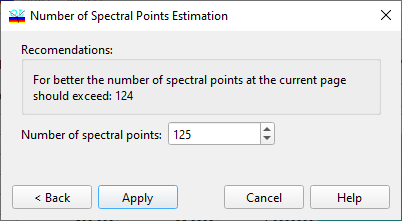

Number of Spectral Points Estimation
Number of Spectral Points Estimation
Navigation: OptiLayer Menu Commands > Data Menu > Target Editor >
Number of Spectral Points Estimation
` <target_editor.html>`__ ` <target_editor.html>`__ ` <target_interpolation.html>`__

This dialog allows for estimating the number of spectral points required for the current spectral target page to efficiently conduct design synthesis. Using too few points can result in a poor approximation of the desired target requirements (undesirable “leaks”, peaks in the spectral characteristics of interest). Conversely, using too many spectral points will slow down computations. The optimal number of spectral points can be calculated if the spectral band of interest is known (Min and Max wavelength or wavenumber values), along with an estimation of the maximum possible total optical thickness of the expected design. Wavelength ranges are extracted from the current target page when the dialog is invoked; the default value of the maximum optical thickness is 5 μm (5000 nm) and should be adjusted for each problem. After pressing the Next button, this dialog provides a recommendation for the number of spectral points.

You can go back to the previous page with the Back button or apply the new number of spectral points to the current Target editor page using the Apply button.
As always, the Cancel button cancels the current operation.